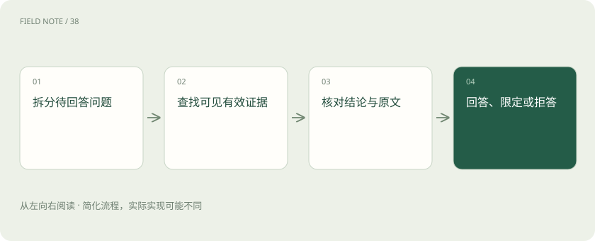

先读哪些知识
先用一个类比理解
写报告时在页脚放一本参考书，不代表书里真的有你写的数字。引用要能指向支持该结论的段落。
类比只帮助建立直觉，不等同于技术的完整机制。
一图看懂

区分检索到与支持结论
检索结果可能和问题同主题，却没有包含答案。证据支持要求原文与结论的主体、时间、范围和条件一致。例如“试用部门可以申请”不能支持“全公司自动开通”。回答应保留这些限定条件，而不是只把文档标题贴在后面。
多段资料可能互相冲突
长制度通常把规则与例外分在不同段落。系统需要检索并组织足够的上下文，同时考虑版本与生效时间。不同来源冲突时应指出冲突及依据，不应仅因某段排在第一名就认定它最新。检索分数不是文档权威程度的通用代理。
拒答可以分成几种情况
没有找到材料、材料有但无法确认、用户无权访问，是不同情况。可以说明当前证据不足，提出能补充范围的问题，或引导到有权限的渠道。不要为了说明权限而泄露受限文档的正文或敏感存在信息，拒答文案也应遵守应用的访问策略。
把证据问题变成可评测项目
为每条关键结论标注所需支持，再分别检查出处可访问、引用定位准确、原文确实支持、没有漏掉必要条件。正确答案配错引用仍应扣分；没有答案时能恰当拒答也是能力。引用可追溯与整体正确率应分开统计。
放进真实场景
SCENARIO
问“周末能否报销打车”，检索找到工作日标准和一个应急加班例外。可信回答应区分普通周末与符合审批条件的加班，而不是只回答“可以”。
别踩这个误区
引用生成得像学术论文，也可能不存在或不支持结论；不要只检查链接格式。
想一想
答案事实正确，但引用的段落与问题无关，算证据合格吗？
不合格。结论正确与引用支持是两项独立要求，需分别检查。
关联阅读
资料与边界
本文为原创知识讲解。类比和图示经过简化；示例数字不代表实测或报价。整理日期：2026-11-04。文末列出对应技术的原始资料，具体功能与版本支持请以原文为准。